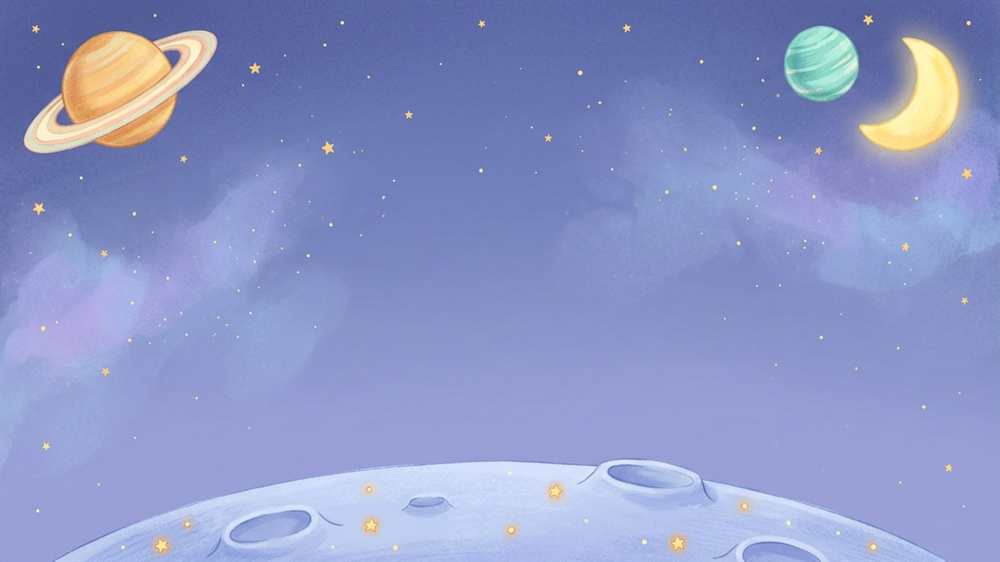

✦
★
✦
★
✦
✦
★
✦
字
黑體
🔊
音效開
⛶
全螢幕
🚀 結合韻 挑戰 🚀
⭐
太空星際結合韻探險
⭐
先大聲唸出結合韻，再找出正確的星球圖卡收集閃亮星星！
1. 選擇探險關卡
🌱
學習模式
1 張圖
看一張圖片，輕鬆認識結合韻語詞
🚀
練習模式
2 選 1
從兩張圖片中，找出正確的圖案
🌟
挑戰模式
3 選 1
從三張圖片中，挑戰找出正確圖案
2. 選擇結合韻範圍
ㄧ
27 組
ㄨ
23 組
ㄩ
10 組
全部
60 組
3. 選擇題數
⭐ 5 題
10 題
15 題
全部（27 題）
🏠
首頁
🌱 學習模式
ㄧ 組
0 / 5 顆星
黑
🔊
⛶
大聲唸唸看！🚀
STEP 1・先大聲唸出結合韻
✦
✦
✦
✦
準備好了嗎？✨
🔄
換一題
🪐
我唸完了！出現圖片
點卡片也可以直接出現圖片喔
▶
找出正確的星球圖卡！✨
結合韻
🔍 放大
點一點，選出正確的圖案！
⭐
🏆
⭐
太棒了！集滿 5 顆太空星星！
太空夥伴都為你拍拍手，任務圓滿成功！
✨ 這一趟一起完成的太空圖卡（點卡片可放大複習）✨
🚀
再玩一次
🏠
回首頁換關卡
🚀
要回到首頁嗎？
這趟收集的太空星星會重新計算喔！
繼續探險
回首頁
✕
© 傑尼爾教育文化事業集團 版權所有